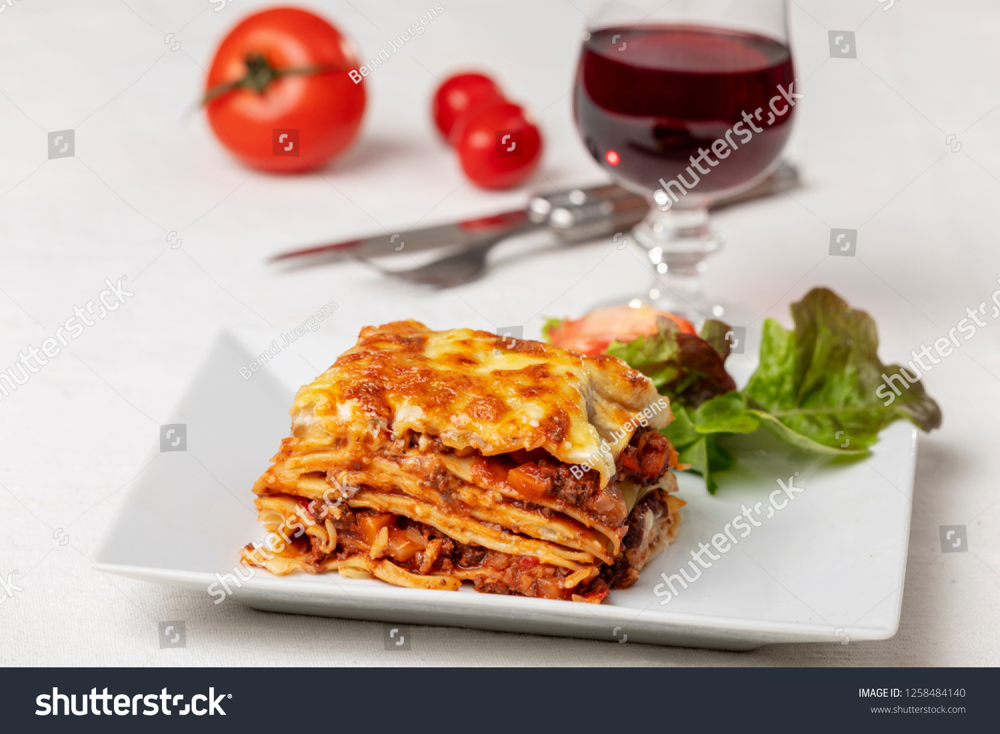

lasagna

Description
large, rectangular strips of pasta.
a baked dish consisting of layers of this pasta, cheese, tomato sauce, and usu. ground meat.
Ingredients
1 can (10.75 ounces) condensed cheddar
1/4 cup milk cheese soup
1 package (1 ounce) fajita seasoning mix
1 pound ground beef
1 can (10.75 ounces) condensed golden
1/2 cup water mushroom soup
1 tablespoon chili powder
1 1/2 teaspoons crushed dried oregano leaves
12 (5- to 6-inch diameter) corn tortillas
Steps
In medium bowl, stir together cheddar cheese soup, milk and half the fajita seasoning, mixing until mixture is smooth.
In skillet over medium-high heat, cook ground beef, crumbling with fork, until browned. Pour off any fat.
Stir mushroom soup, water, chili powder, oregano and remaining fajita seasoning into ground beef, mixing well.
Increase heat and bring mixture to a boil.
Reduce heat to low and continue cooking for 5 minutes. Remove skillet from heat.
Place 3 tortillas in bottom of a shallow, 2-quart baking dish, overlapping slightly and covering bottom as much as possible.
Spread 1 cup beef mixture over tortillas in dish. Add another layer of 3 tortillas and another cup of beef mixture. Repeat layers with 3 more tortillas and another cup of beef.
Top with remaining tortillas. Spread cheese soup mixture over tortillas. Yields 6.
Home